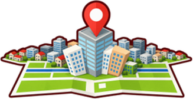
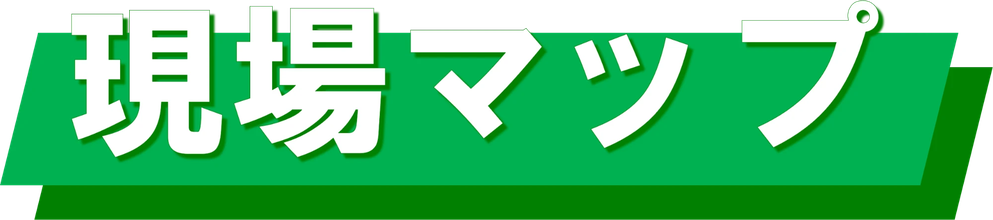

株式会社三浦工業
現場の場所と進み具合を地図で見る
≡ 現場一覧
キー変更
現場リスト
すべて
見積済
施工中
完成済
↑
↓
現場を移動選択 ／
Enter
記録帳 ／
Esc
選択解除
屋根の色面：トレース保存 または 🏢自動取得した輪郭のみ表示
◀
✕
2D 地図
2D 写真
3D 立体
⟲
⟳
⬆真上
◺ 角度
◹ 角度
🏷 ラベル表示
✏️ 面積計測を始める
🎯 3点で屋根面を検出
🤖 AIで面を検出（β）
🏢 建物輪郭を自動取得
🛠
始点を設定中
⬅ 戻る
➡ 進む
頂点表示 ON
寸法表示 ON
⌒ 辺を弧に
トレース中の面積：--
確定
◀
▲
▼
▶
0.1m
0.5m
2m
面を移動
🧵 防水層の割付投影（千鳥張り）
有効 長手
m
有効 短手
m
投影
消去
例：AS原反8m×1m→ラップ後7.9×0.9
行を半枚ずらした千鳥で描画・本数概算
🧱 立上り・天端の作図
平場
立上り
天端
立上り高さ
mm
天端（笠木）幅
mm
生成
消去
面の頂点を動かすと自動で追従します。
数量＝周長×H／周長×W（概算）
屋根面の高さ：
15
m
スライダーで面を上下し、屋上に合わせてください
✕ 選択解除して全現場を表示
-- m
現場記録帳
✕
＋ 新規現場を登録
✕
工事名
住所（札幌市内は区から入力可）
面積（㎡）
ステータス
見積済
施工中
完成済
工法
ウレタン塗膜 通気緩衝工法
ウレタン塗膜 密着工法
塩ビシート防水 機械固定
塩ビシート防水 接着工法
改質アスシート トーチ工法
アスファルト防水 熱工法
住所を検索して登録
🔑 Google Maps APIキーを入力
保存して地図を開く